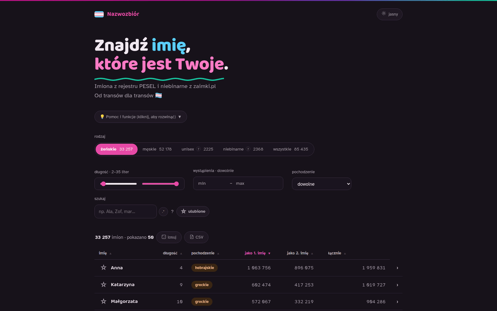
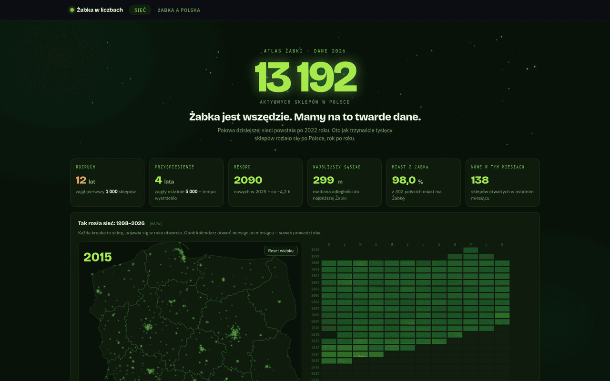
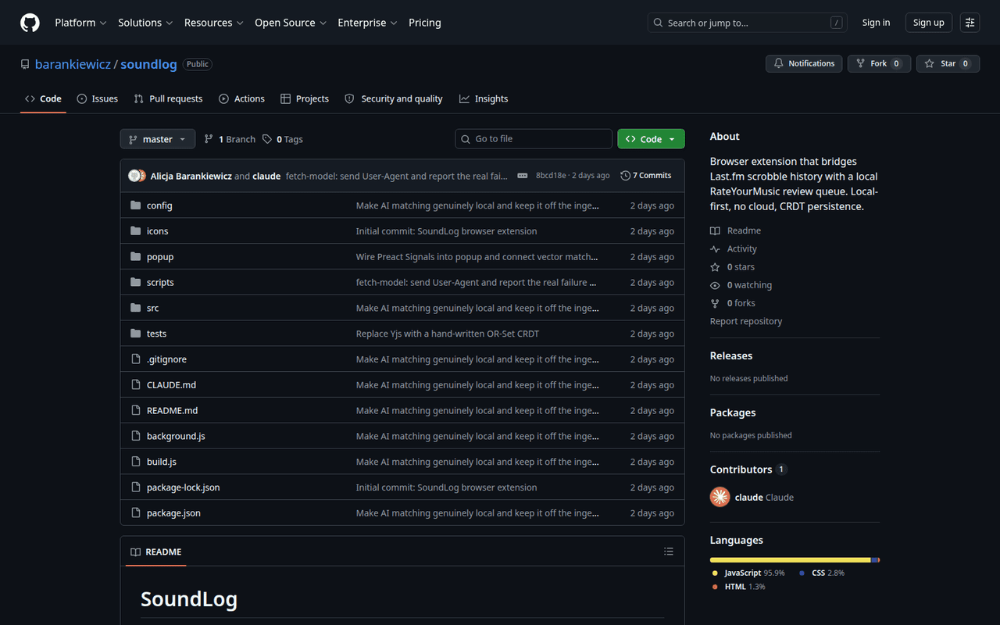

Curriculum Vitae
Solution-driven professional with 7 years of Data Engineering and BI Development experience. Passionate about working with data and finding order in its apparent chaos. Enthusiastic about building custom solutions that drive business success. Loves coding and solving challenging problems. A fast learner, highly motivated, and a true team player.
Download CV (PDF)Experience
2019 — 2026
Data Engineer / BI Developer
CRESTT · Warsaw
End-to-end technical coverage of Process Mining and Data Engineering projects. Responsible for building data pipelines and architecture, data warehousing, complex data models, visualization via dashboards, and automation.
2024 — 2025
Global Casual Dining Operator
Client Project
Developed robust ETL pipelines using Airflow DAGs. Implemented row versioning via SCD type 2. Built a fraud detection data model across SAP HANA FI/CO, MM, and HR modules.
2024
German Food Company
Client Project
Implemented a Process Mining solution for warehouse pallet movements in SAP EWM. Integrated primary SAP EWM source with custom enrichment sources. Conducted end-user training sessions.
2022 — 2023
International Logistics Operator
Client Project
Developed a custom ELT pipeline via SFTP and Celonis Data Push API. Designed dashboards for worker productivity, picking errors, and on-time delivery. Azure migration cut Celonis licensing costs by over 80%.
2019 — 2022
Major Polish Telco Company
Client Project
Integrated customer-specific systems with SAP HANA and SAP EWM sources. Built analytical dashboards identifying over 3M PLN in fraudulent activities within the first month. Administered an on-premise Celonis instance.
2019 — 2023
Computer Science & Info Systems
Warsaw University of Technology
B.Sc. in Computer Science and Information Systems. Faculty of Mathematics and Information Science.
Skills
Core
Tools & Platforms
Certifications
Languages
Personal Projects
What I'm tinkering on

Web app
Find the name that's really yours - searchable across every name in Polish PESEL registry - instantly!
A site dedicated for trans people who are ditching their deadnames. It gathers names from Polish PESEL registry to get a list of names that are 'officially used' in Polish administrative system and enriches them with info about the name's origin and meaning wherever possible. You can browse the names and filter/sort them with sub-second speed on most queries. No db - static site serving jsons with datasets.
Tech Stack
What I Learned
A "proper" backend isn't always necessary - with the right static indexing, a no-DB site is a genuinely useful alternative that reduces complexity for smaller datasets.
How to deploy automatically via Github Actions
How to work with python to cleanse, wrangle and join difficult data - searching for origins and meanings was a tough challenge.
The repo as well as the site is in Polish because of the nature of the site. Feel free to contact me if you need other languages to be implemented!

Data & GIS Analytics
The most Żabka-obsessed map of Poland you'll ever scroll through.
An interactive, high-performance spatial analytics platform for tracking the density, growth, and socio-economic correlations of the Żabka store network and InPost parcel lockers across Poland.
Tech Stack
What I Learned
I'm obsessed with Żabka
How difficult and important it is to build a fast, optimized APIs even for small datasets
How much data can be saved by bundling packages in a smart way
Data model performance optimization
Working with Redis to speed the site up
Working with JS Chart libraries
How to leverage Claude to offload boring tasks in the project - such as testing.
The repo as well as the site is in Polish because of the nature of the site. Feel free to contact me if you need other languages to be implemented!
Creative Frontend Design
This very site
This very portfolio, a very simple site that I tried to make somehow visually pleasing.
Tech Stack
What I Learned
Working with CSS 3D transforms and canvas-based noise.

Browser Extension / Last.fm API
RYM review reminder based on your Last.fm history
A browser extension that bridges your Last.fm scrobble history with RateYourMusic reviews. It watches your listening activity, groups plays into album sessions, and builds a local review queue you can work through at your own pace.
Tech Stack
Highlights
What I Learned
Working with Chrome and Firefox extension standards
Working with Last.fm API
Working with local LLM models to achieve semantic album name matching
Brushed up on classic string comparison algorithms (Levenshtein dist)
Still WIP! Not yet finished!!!
Selected Client Work
End-to-end data engineering across process mining, warehousing, and analytics.
Global Casual Dining Operator
Fraud Detection & Data Warehouse
Built end-to-end analytics infrastructure for a multi-brand restaurant group. Developed Airflow-orchestrated ETL pipelines with SCD type 2 row versioning. Designed a fraud detection data model spanning finance, procurement, and HR modules in SAP HANA.
Delivered fraud model covering FI/CO, MM, and HR modules
German Food Company
Warehouse Process Mining
Implemented a Process Mining solution for pallet movement analysis in SAP EWM. Integrated primary SAP sources with custom enrichment data pipelines. Conducted hands-on training sessions for warehouse analysts and management teams.
Full warehouse visibility across pallet lifecycle
International Logistics Operator
ELT Pipeline & Azure Migration
Designed a custom ELT pipeline using SFTP and the Celonis Data Push API. Built operational dashboards for worker productivity, picking error rates, and on-time delivery metrics. Led Azure cloud migration reducing licensing costs by over 80%.
Cut licensing costs by 80% and improved data freshness
Major Polish Telco Company
Fraud Analytics & Celonis Administration
Integrated customer-facing and back-office systems with SAP HANA and SAP EWM data sources. Built analytical dashboards exposing procurement irregularities and payment discrepancies. Administered on-premise Celonis instance serving 200+ users.
Identified 3M+ PLN in fraudulent activity in first month
Let's
connect
Looking for a data engineer who thrives on turning chaos into clarity? Reach out to discuss how I can help your team build robust data infrastructure, uncover actionable insights, and drive measurable business outcomes.